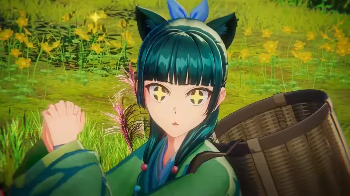

Luiso · 10 de septiembre de 2026
La popular franquicia The Apothecary Diaries tendrá por primera vez una adaptación destinada a consolas. Koei Tecmo anunció The Apothecary Diaries: The False Imperial Brother, una aventura desarrollada por Gust, el estudio conocido entre otras cosas por la saga Atelier.
El proyecto contará con una historia completamente original creada bajo la supervisión de Natsu Hyūga, autora de las novelas originales, y llevará nuevamente a Maomao al centro de una serie de misterios dentro del palacio imperial.
En esta ocasión, la protagonista deberá investigar una serie de acontecimientos extraños que afectan al palacio, el distrito de entretenimiento y las calles de la capital.
El juego gira alrededor de dos cadenas de misterios conocidas como los Cinco Misterios y las Cinco Maldiciones.
Como en la obra original, Maomao tendrá que utilizar sus conocimientos sobre medicina y sustancias para avanzar en las investigaciones.
La diferencia es que el formato interactivo permitirá al jugador participar directamente en la recopilación de información y en la construcción de las pruebas necesarias para resolver cada caso.
El desarrollo está a cargo de Gust, estudio perteneciente a Koei Tecmo y especialmente conocido por sus trabajos en juegos de rol y aventuras con sistemas de elaboración.
La propuesta de The False Imperial Brother combinará investigación, deducción y elaboración de medicamentos, utilizando las habilidades de Maomao como uno de los principales pilares de la jugabilidad.
Además de los personajes conocidos de la franquicia, el título incorporará nuevos personajes creados específicamente para esta historia.
The Apothecary Diaries: The False Imperial Brother está previsto para comienzos de 2027.
Llegará a Nintendo Switch 2, Nintendo Switch, PlayStation 5 y PC a través de Steam.
El juego tendrá voces en japonés y textos en inglés, mientras que todavía quedan detalles por confirmar sobre otras localizaciones.
Koei Tecmo también confirmó que ofrecerá más información durante una presentación especial prevista para el 20 de septiembre en Tokyo Game Show 2026.